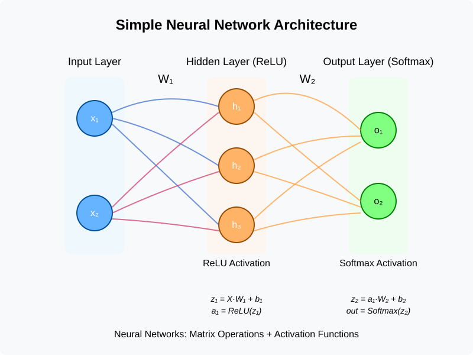

A simple neural network, built from scratch
Think of this as step 0 of the series. We'll build a simple neural network from scratch using Python and NumPy — enough to understand the basic mechanics before reaching for more complex architectures.
The focus is on the math underneath. By the end you should have an intuition for what is actually happening under the hood:
- Matrix multiplications (
np.dot) - Simple activation functions (ReLU, softmax)
- Basic math operations driving forward and backward passes
If you'd rather see neural-network layers in a more practical setting, check out MLP on MNIST — a simple MLP built with PyTorch and trained on MNIST. For optimizers, loss functions, and the rest of the toolkit, see the series repo on GitHub.
How a neural network works
A neural network works by mimicking how the human brain processes information.
It consists of multiple layers of interconnected nodes (neurons). Each node takes input, applies weights and a bias, runs the result through an activation function, and passes it on to the next layer.
During training, the network adjusts its weights using backpropagation to minimize the error between its predictions and the actual values. Over time, it learns to recognize patterns and make accurate predictions or classifications.
Below, we implement that loop from scratch in Python and NumPy.
The Model
Our model: Input Layer (2 neurons) → Hidden Layer (3 neurons with ReLU) → Output Layer (2 neurons with Softmax).

This is a basic Multilayer Perceptron — an MLP (more on MLPs here). It refers to fully connected feedforward networks with at least one hidden layer, exactly what we're building. The walk-through follows the notebook closely.
Notebook on GitHubImplementation Walk-through
The Input
We use a simple dataset of 200 samples with 2 features and 2 classes, generated with NumPy's random number generator. The input layer has 2 neurons, one per feature.
The Hidden Layer
The hidden layer has 3 neurons that apply the ReLU activation function. Each neuron takes the input from the input layer, applies weights and a bias, then runs the result through ReLU:
output = activation(weights · inputs + bias) # or in this case: a = ReLU(w · x + b)
So for example, with the weights and biases laid out as follows:
| Layer | Description | Shape | Values |
|---|---|---|---|
| Input → Hidden Weights \(W_1\) | Weights connecting input to hidden | (2, 3) |
-0.60.60.4
-0.60.70.5
|
| Hidden Biases \(b_1\) | Biases of hidden layer | (1, 3) |
0.30.50.3
|
| Hidden → Output Weights \(W_2\) | Weights connecting hidden to output | (3, 2) |
-0.70.7
0.8-0.8
0.5-0.5
|
| Output Biases \(b_2\) | Biases of output layer | (1, 2) |
-0.40.4
|
Let's say we have [0.5, 0.5] as the input.
Step 1: Input → Hidden Layer
Compute the hidden layer pre-activation:
\[ z_1 = x \cdot W_1 + b_1 = \begin{bmatrix}0.5, 0.5\end{bmatrix} \cdot \begin{bmatrix}-0.6, 0.6, 0.4\\-0.6, 0.7, 0.5\end{bmatrix} + \begin{bmatrix}0.3, 0.5, 0.3\end{bmatrix} = \begin{bmatrix}-0.3, 1.15, 0.75\end{bmatrix} \]
Step 2: Apply ReLU activation
Apply the ReLU activation function:
\[ a_1 = \text{ReLU}(z_1) = \text{ReLU}(\begin{bmatrix}-0.3, 1.15, 0.75\end{bmatrix}) = \begin{bmatrix}0, 1.15, 0.75\end{bmatrix} \]
Step 3: Hidden → Output Layer
Compute the output layer pre-activation:
\[ z_2 = a_1 \cdot W_2 + b_2 = \begin{bmatrix}0, 1.15, 0.75\end{bmatrix} \cdot \begin{bmatrix}-0.7, 0.7\\0.8, -0.8\\0.5, -0.5\end{bmatrix} + \begin{bmatrix}-0.4, 0.4\end{bmatrix} = \begin{bmatrix}0.895, -0.895\end{bmatrix} \]
Step 4: Apply Softmax activation
The softmax formula:
\[ \text{softmax}(z) = \frac{e^{z_i}}{\sum_{j=1}^{K} e^{z_j}} \]
First, compute \( e^{z_i} \) for each output neuron: \( e^{0.895} \approx 2.447 \) and \( e^{-0.895} \approx 0.408 \).
Then the sum: \( \sum_{j=1}^{K} e^{z_j} = 2.447 + 0.408 \approx 2.855 \).
Finally, divide each \( e^{z_i} \) by this sum:
\[ a_2 = \text{softmax}(z_2) = \begin{bmatrix}\frac{2.447}{2.855}, \frac{0.408}{2.855}\end{bmatrix} \approx \begin{bmatrix}0.857, 0.143\end{bmatrix} \]
We can verify these sum to 1: 0.857 + 0.143 = 1.
This transformation has converted our raw outputs into a probability distribution — the first class has roughly an 85.7% probability and the second class about 14.3%.
And that's just one forward pass through the network. Imagine doing this for thousands of samples.
Step 5: Backpropagation
Backpropagation updates the weights and biases of the network using the error between predicted and actual output.
Take the previous result, \( \begin{bmatrix}0.857, 0.143\end{bmatrix} \). If the true label is class 1 (indexing from 0), the one-hot encoding is \( \begin{bmatrix}0, 1\end{bmatrix} \) — the model assigned high probability to the wrong class.
For classification we use cross-entropy loss:
\[ L(y, \hat{y}) = -\sum_{i=1}^{C} y_i \log(\hat{y}_i) \]
where \( y \) is the true label, \( \hat{y} \) is the predicted label, and \( C \) is the number of classes. Since only \( y_1 \) is 1:
\[ L(y, \hat{y}) = -y_0 \log(\hat{y}_0) - y_1 \log(\hat{y}_1) = -0 \cdot \log(0.857) - 1 \cdot \log(0.143) \approx 1.944 \]
Now we compute gradients of the loss with respect to each weight and bias. With two activation functions in play, buckle up. First, the notation:
- Input: \( x \)
- Weights and biases of the hidden layer: \( W_1, b_1 \)
- Weights and biases of the output layer: \( W_2, b_2 \)
- Pre-activation of the hidden layer: \( z_1 = W_1 \cdot x + b_1 = \begin{bmatrix}-0.3, 1.15, 0.75\end{bmatrix} \)
- Activation of the hidden layer: \( a_1 = \text{ReLU}(z_1) = \begin{bmatrix}0, 1.15, 0.75\end{bmatrix} \)
- Pre-activation of the output layer: \( z_2 = W_2 \cdot a_1 + b_2 = \begin{bmatrix}0.895, -0.895\end{bmatrix} \)
- Activation of the output layer: \( a_2 = \text{softmax}(z_2) = \begin{bmatrix}0.857, 0.143\end{bmatrix} \)
- Cross-entropy loss: \( L(y, \hat{y}) \approx 1.944 \)
Now the chain rule, one step at a time:
1. Gradient of the loss w.r.t. the output-layer activation.
For cross-entropy with softmax output, if \( y \) is one-hot then:
\[ \frac{\partial L}{\partial a_2} = -\frac{y}{a_2} \]
2. Gradient of the loss w.r.t. the output-layer pre-activation.
A key property of softmax + cross-entropy is:
\[ \frac{\partial L}{\partial z_2} = a_2 - y \]
Substituting \( y = \begin{bmatrix}0, 1\end{bmatrix} \) and \( a_2 = \begin{bmatrix}0.857, 0.143\end{bmatrix} \):
\[ \frac{\partial L}{\partial z_2} = \begin{bmatrix}0.857, 0.143\end{bmatrix} - \begin{bmatrix}0, 1\end{bmatrix} = \begin{bmatrix}0.857, -0.857\end{bmatrix} \]
3. Gradient of the loss w.r.t. the output-layer weights.
By chain rule:
\[ \frac{\partial L}{\partial W_2} = \frac{\partial L}{\partial z_2} \cdot \frac{\partial z_2}{\partial W_2} = \frac{\partial L}{\partial z_2} \cdot a_1^T \]
where \( a_1^T \) is the transpose of the hidden-layer activation. So:
\[ \frac{\partial L}{\partial W_2} = \begin{bmatrix}0.857, -0.857\end{bmatrix} \cdot \begin{bmatrix}0, 1.15, 0.75\end{bmatrix}^T \approx \begin{bmatrix}0, 0.986, 0.643\\0, -0.986, -0.643\end{bmatrix} \]
4. Gradient of the loss w.r.t. the output-layer biases.
Similarly:
\[ \frac{\partial L}{\partial b_2} = \frac{\partial L}{\partial z_2} \cdot 1 = \begin{bmatrix}0.857, -0.857\end{bmatrix} \]
5. Gradient of the loss w.r.t. the hidden-layer activation.
\[ \frac{\partial L}{\partial a_1} = \frac{\partial L}{\partial z_2} \cdot W_2^T = \begin{bmatrix}0.857, -0.857\end{bmatrix} \cdot \begin{bmatrix}-0.7, 0.8, 0.5\\0.7, -0.8, -0.5\end{bmatrix} \approx \begin{bmatrix}-1.2, 1.37, 0.857\end{bmatrix} \]
6. Gradient of the loss w.r.t. the hidden-layer pre-activation.
For ReLU, the gradient is 1 for positive values and 0 otherwise:
\[ \frac{\partial L}{\partial z_1} = \frac{\partial L}{\partial a_1} \cdot 1_{\{z_1 > 0\}} = \begin{bmatrix}-1.2, 1.37, 0.857\end{bmatrix} \cdot 1_{\{-0.3, 1.15, 0.75\}} = \begin{bmatrix}0, 1.37, 0.857\end{bmatrix} \]
7. Gradient of the loss w.r.t. the hidden-layer weights.
\[ \frac{\partial L}{\partial W_1} = \frac{\partial L}{\partial z_1} \cdot x^T = \begin{bmatrix}0, 1.37, 0.857\end{bmatrix} \cdot \begin{bmatrix}0.5, 0.5\end{bmatrix}^T \approx \begin{bmatrix}0, 0.685, 0.428\\0, 0.685, 0.428\end{bmatrix} \]
8. Gradient of the loss w.r.t. the hidden-layer biases.
\[ \frac{\partial L}{\partial b_1} = \frac{\partial L}{\partial z_1} = \begin{bmatrix}0, 1.37, 0.857\end{bmatrix} \]
That's it — we have all the gradients of the loss with respect to each weight and bias. From here, gradient descent does the rest.
Step 6: Update Weights and Biases
The gradient-descent update rule:
\[ \begin{align} W &= W - \eta \cdot \frac{\partial L}{\partial W}\\ b &= b - \eta \cdot \frac{\partial L}{\partial b} \end{align} \]
where \( \eta \) is the learning rate. With \( \eta = 0.01 \), one update looks like this:
\[ \begin{align} W_1 &= W_1 - 0.01 \cdot \frac{\partial L}{\partial W_1} = W_1 - 0.01 \cdot \begin{bmatrix}0, 0.685, 0.428\\0, 0.685, 0.428\end{bmatrix}\\ &\approx \begin{bmatrix}-0.6, 0.59315, 0.39572\\-0.6, 0.69315, 0.49572\end{bmatrix} \end{align} \]
Step 7: Repeat
Repeat the forward pass, loss calculation, backpropagation, and weight update for each batch in the training set until you hit the epoch limit.
Conclusion
And that's a simple neural network, implemented from scratch in Python and NumPy. It's a small example, but it covers the core calculations of how a neural network actually works.
Next up: an MLP on MNIST — a simple MLP in PyTorch, trained on the classic image-classification dataset.